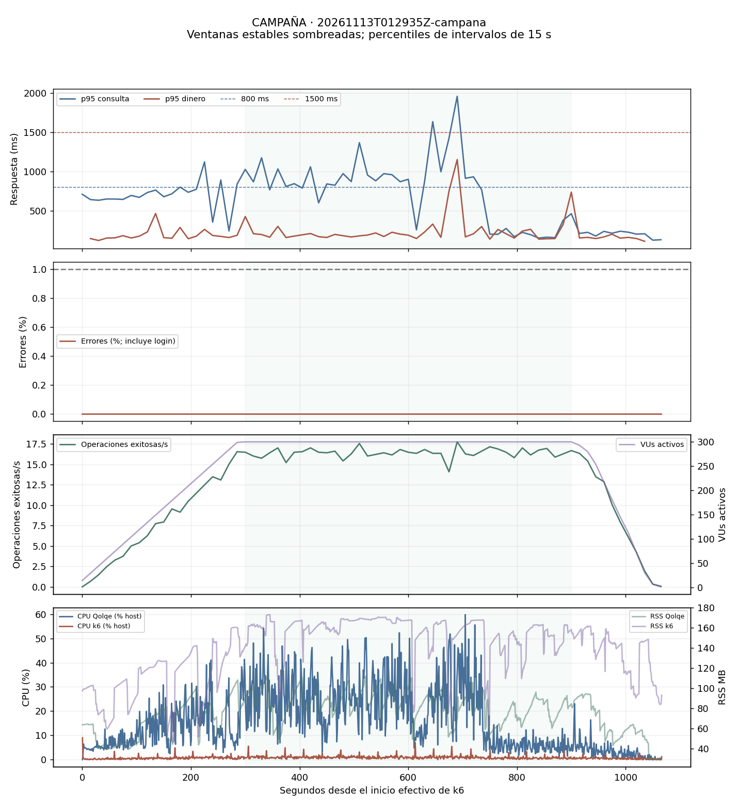
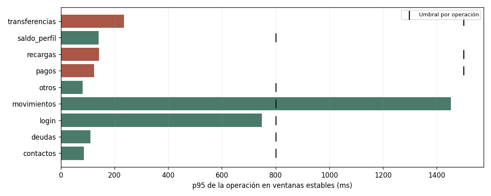

20261113T012935Z-campana
Ejecución válida: True · Cumplimiento del perfil: True · Integridad monetaria: True
| Segundos | Operaciones | Ops/s | p95 consulta | p95 dinero | Error % | Latencia agregada | Error normal | SLA por operación |
|---|---|---|---|---|---|---|---|---|
| 300–900 | 9828 | 16.380 | 889.0 | 215.1 | 0.0 | False | True | False |
| Operación | Muestras | Errores | p50 ms | p95 ms | p99 ms | Distribución % |
|---|---|---|---|---|---|---|
| contactos | 942 | 0 | 22.0 | 85.9 | 215.3 | 9.6 |
| deudas | 614 | 0 | 24.0 | 110.1 | 304.4 | 6.2 |
| login | 1617 | 0 | 600.0 | 749.0 | 935.8 | sin muestra |
| movimientos | 1407 | 0 | 769.0 | 1453.8 | 2045.0 | 14.3 |
| otros | 980 | 0 | 22.0 | 81.0 | 256.0 | 10.0 |
| pagos | 410 | 0 | 39.0 | 123.1 | 297.3 | 4.2 |
| recargas | 947 | 0 | 42.0 | 141.5 | 530.5 | 9.6 |
| saldo_perfil | 3025 | 0 | 41.0 | 140.8 | 526.7 | 30.8 |
| transferencias | 1503 | 0 | 128.0 | 234.7 | 467.8 | 15.3 |
El throughput de negocio cuenta únicamente operaciones correctas; all_ops_s conserva las finalizadas incluyendo fallos y req_s las peticiones totales. El contador nativo operaciones_negocio de k6 cuenta finalizaciones y no se utiliza como throughput exitoso. Saldo y perfil representa una operación de negocio con dos peticiones secuenciales. Login se mide por separado. Las métricas operacion_ms usan tiempo de pared de la operación completa; los percentiles se calculan con interpolación lineal. Las peticiones de preparación están fuera de la medición.


| Métrica | Valor |
|---|---|
| samples | 1036.0 |
| app_cpu_host_max | 59.8 |
| generator_cpu_host_max | 9.0 |
| app_rss_mb_max | 113.1 |
CPU host = CPU del proceso y sus hijos / procesadores lógicos. El CSV conserva también CPU en equivalentes de núcleo. RSS de Qolqe incluye el proceso hijo de Python. Las columnas de CPU y memoria del host reflejan competencia de otras aplicaciones.
El resumen nativo de k6 incluye toda la ejecución; este análisis utiliza las ventanas estables especificadas y percentiles por operación.
{
"approved": true,
"attempts": 3988,
"database_operations": 3988,
"confirmed_records": 3988,
"committed_after_http_error": 0,
"issues": []
}La conciliación relaciona intentos, códigos, registros monetarios, movimientos y saldos de propietarios y destinatarios. Una respuesta HTTP perdida se investiga en la base y no se reintenta automáticamente.
Conciliación JSON · Saldos iniciales/esperados/finales · Diario monetario conciliado · CSV recursos · Series · Diario de operaciones · Versión y entorno · Resumen k6 · Log servidor
| Operación | HTTP | Código | Ocurrencias |
|---|